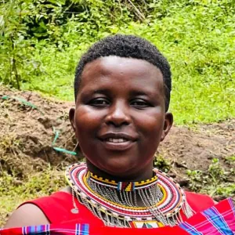
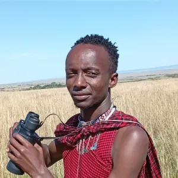

You create value
We're building the system to help you realize your true capacity.
Not sure where to start?
Tell us what you want to achieve. We'll help you find the next step.
Chat with usDiscover the alchemy of prosperity
ProsperGenics is a community of people who want to create value for themselves, for others, and for the communities around them.
Where does your value lie?
Eight quick questions, about a minute. You get a personal next step right away: a course, people to meet, or a coach to talk to.
Find your next step
No sign-up needed. Your answers stay in your browser unless you choose to send them.
Meet the alchemists
The people who turn skills, ideas and opportunities into real value.

"I'm building Jengo, our AI agent platform. It runs most of what we ship."

"I design and build web products, and I'm growing my own business with everything I learn."

"I turn opportunities into products. Right now that means integrations and new partnerships."

"I curate the Perridon collection, researching the provenance and the stories behind every piece."

"I had a small store in Oloolaimutia. Here I learned the business skills to take it further."

"I'm still studying, and I apply what I learn on real projects with real customers."

"I develop software and train new developers. Good software starts with understanding people."

"I build and ship features for our web platforms, with real responsibility from day one."
"I'm learning Dutch with our own coach app. Learning works better when it feels personal."
"I'm learning digital skills step by step and putting them to work in daily life."
"I work on our brand and marketing, finding the right words for what we build."
"People invested in me. I grew my herd and the results now pay the school fees."
Tools we use, built ourselves
The systems behind our daily work. We use them, we build them, we offer them.
Our services
What we do for organisations, powered by the systems above.
AI chat, courses and avatar videos for your organisation, on your own platform.
Deep research that corrects the record, with evidence anyone can verify.
Provenance systems that give objects a verifiable history.
Websites, SEO, AI-optimisation and social media promotion that get you found.
Initiatives by our members
Companies and organisations our members built and run.